Gujarati Khaman : Recipe, Ingredients, Tips and Pairing Ideas
STEPWISE PHOTOS
-
PREP
- Firstly, crush ginger and green chilli to a paste.
- Secondly, take a flat bottomed vessel, (I used the cooker container) grease it generously with oil.
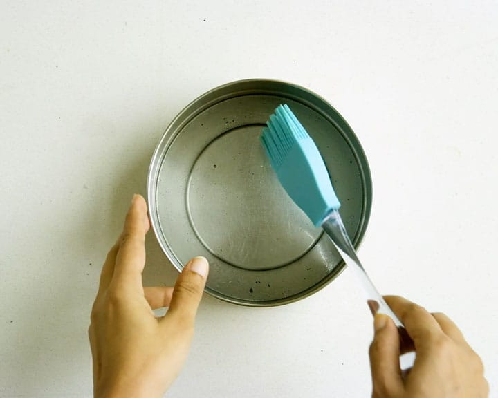
-
MAKE BATTER
- After that, take besan in a mixing bowl.
- Then add the crushed ginger chilli, water, curd, lemon juice, turmeric, sugar and salt to it.
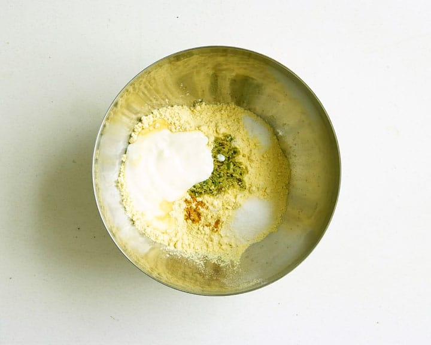
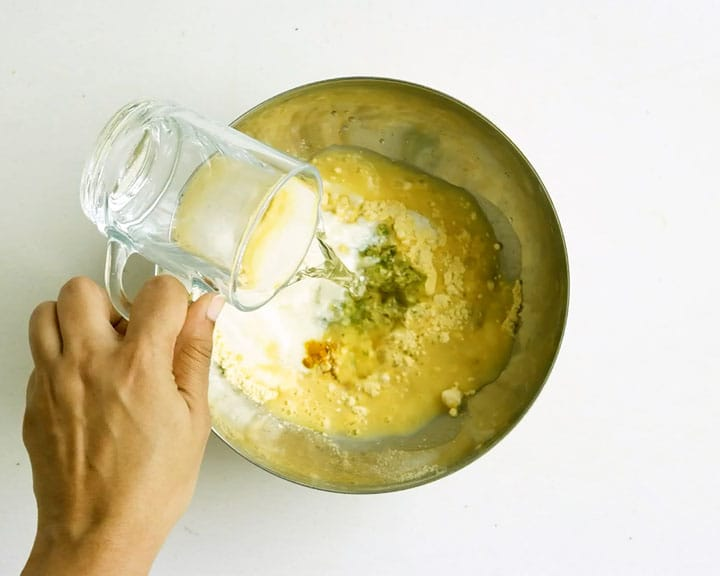
-
Mix well furthermore and keep aside.
-
After that, add the fruit salt to the besan mixture only at the time you are going to steam. Make sure to mix well.
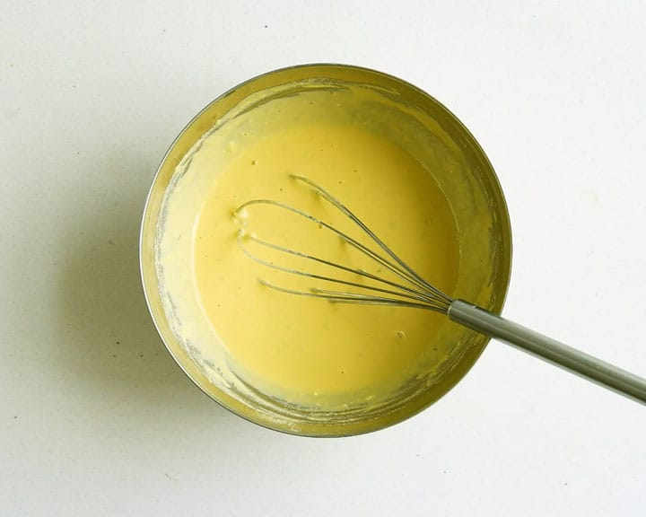
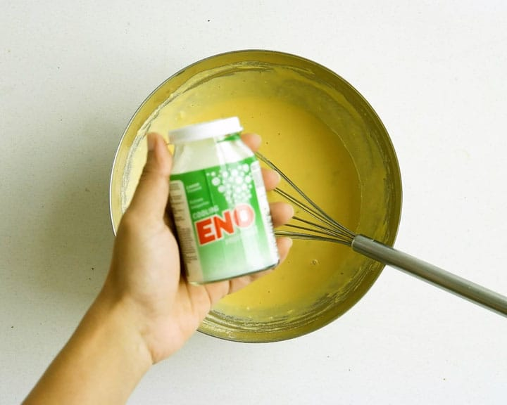
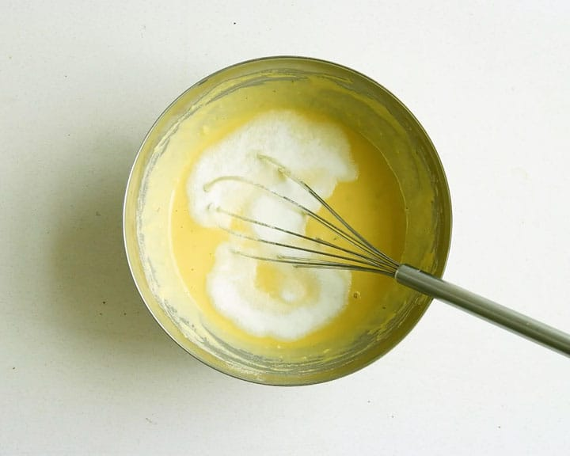
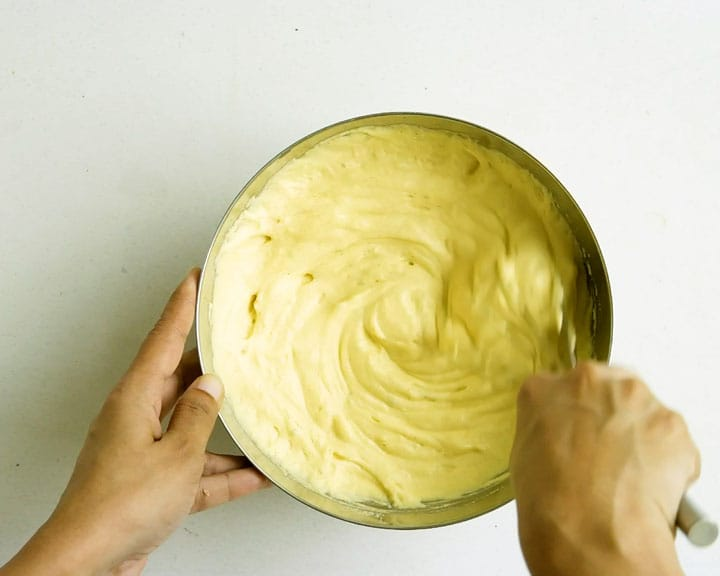
-
STEAM KHAMAN
- Then, cook this mixture for 10-12 minutes.
- Insert a knife to check if its done. It should come out clean
- Keep for 5 minutes to cool down and then invert to a plate. Cut into squares.
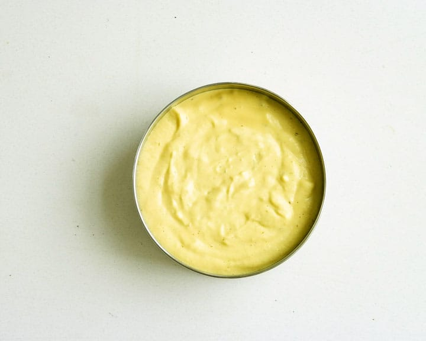
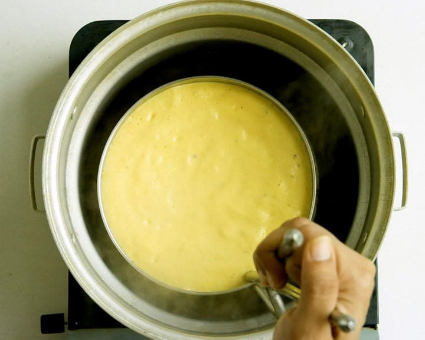
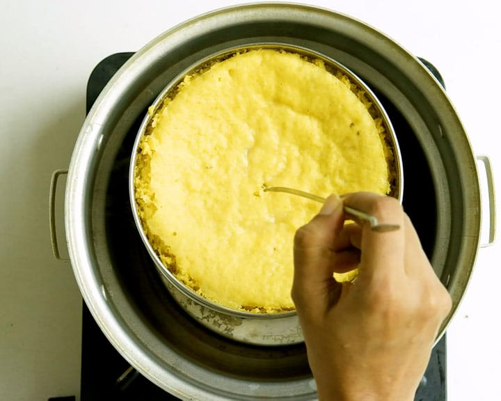
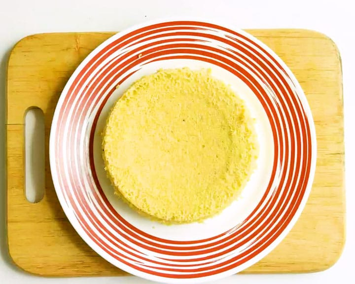
-
TEMPERING
- Heat oil in a tadka pan. Once hot, add mustard, let it splutter. Then, add asafoetida, chillies to it.
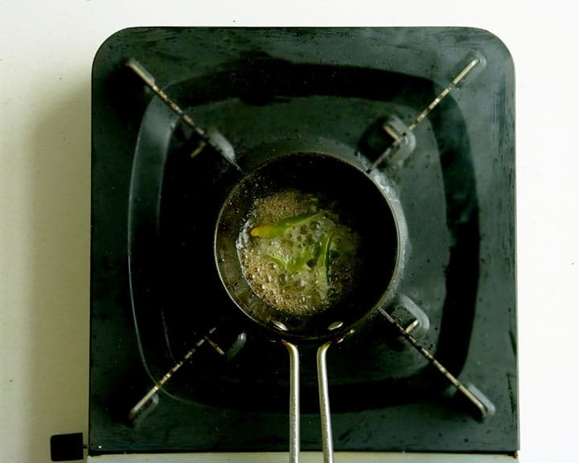
- Then, spread it over the steamed khaman.
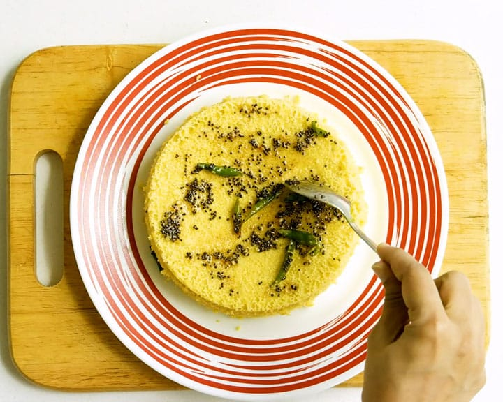
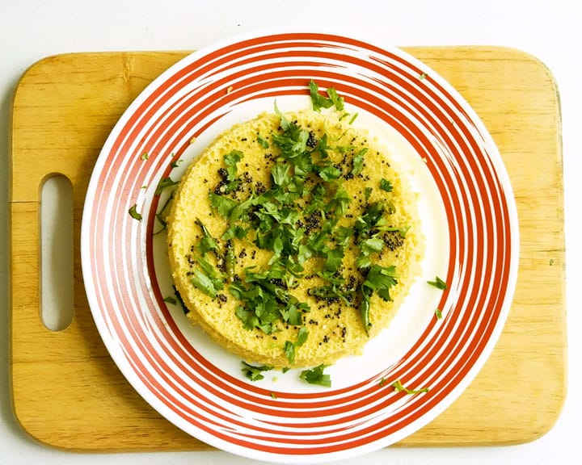
-
OPTIONAL STEP
- Add ¼ cup water and 1 tablespoon sugar to the tadka, bring to a boil. After that, spread (pour) it over the dhokla.
And serve it with green chutney. I cut them into squares, you can even cut it like we cut Pizza